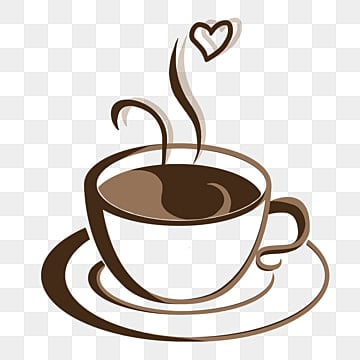

Les pingouins sont des oiseaux marins que l'on trouve dans l'émisphère Nord. Ils font partie de la famille des Alcidés qui n'a plus qu'un représentant pour le genre Alca : le Petit Pingouin torda (Alca torda) un oiseau de petite taille, entre 35 et 45cm.(Source:Nausicaa.fr)
Les Pokemons sont des créatures imaginaire du jeu vidéo Pokemon(ainsi que du dessin animé dérivé) de formes très diverses, qui peut-être attrapé et qui est utilissé pour des combats avec d'autres Pokemon (Source:wictionnary)
Les Canards sont des oiseaux aquatiques ansériformes, au cou court, au large bec jaune aplati, aux très courtes pattes palmées et aux longues ailes pointues, domestiqués ou non.(Source:wikipédia)
